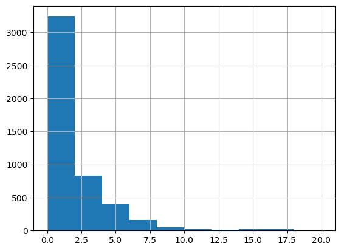
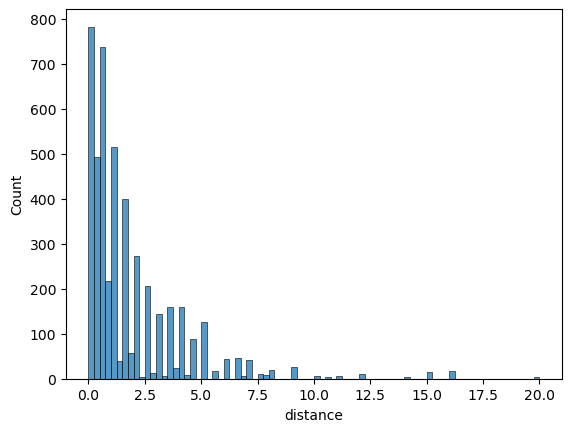

import numpy as np
import pandas as pdInstrumental variables
IV example on mock dataset
Constructing the dataset
Create four random series of length \(N=1000\)
- \(x\): education
- \(y\): salary
- \(z\): ambition
- \(q\): early smoking
such that:
- \(x\) and \(z\) cause \(y\)
- \(z\) causes \(x\)
- \(q\) is correlated with \(x\), not with \(z\)
A problem arises when the confounding factor \(z\) is not observed. In that case, we can estimate the direct effect of \(x\) on \(y\) by using \(q\) as an instrument.
Run the follwing code to create a mock dataset.
N = 100000
ϵ_z = np.random.randn(N)*0.1
ϵ_x = np.random.randn(N)*0.1
ϵ_q = np.random.randn(N)*0.01
ϵ_y = np.random.randn(N)*0.01z = 0.1 + ϵ_z
q = 0.5 + 0.1234*ϵ_x + ϵ_q
# here we must change the definition so that q affects x:
# x = 0.1 + z + ϵ_x
x = 0.1 + z + q + ϵ_x
y = 1.0 + 0.9*x + 0.4*z + ϵ_ydf = pd.DataFrame({
"x": x,
"y": y,
"z": z,
"q": q
})Describe the dataframe. Compute the correlations between the variables. Are they compatible with the hypotheses for IV?
df.head()| x | y | z | q | |
|---|---|---|---|---|
| 0 | 0.458958 | 1.428012 | -0.006158 | 0.489963 |
| 1 | 0.536544 | 1.535235 | 0.119739 | 0.484211 |
| 2 | 0.550795 | 1.561178 | 0.149119 | 0.470899 |
| 3 | 0.774870 | 1.773310 | 0.184079 | 0.501838 |
| 4 | 0.761371 | 1.769818 | 0.197662 | 0.501622 |
df.describe()| x | y | z | q | |
|---|---|---|---|---|
| count | 100000.000000 | 100000.000000 | 100000.000000 | 100000.000000 |
| mean | 0.699704 | 1.669716 | 0.099930 | 0.499973 |
| std | 0.150261 | 0.164733 | 0.099805 | 0.015818 |
| min | -0.037950 | 0.874772 | -0.301234 | 0.429432 |
| 25% | 0.598491 | 1.558824 | 0.032560 | 0.489285 |
| 50% | 0.699121 | 1.669068 | 0.099462 | 0.499978 |
| 75% | 0.800179 | 1.780555 | 0.167347 | 0.510695 |
| max | 1.329398 | 2.349659 | 0.522942 | 0.567387 |
df.corr()| x | y | z | q | |
|---|---|---|---|---|
| x | 1.000000 | 0.981526 | 0.662762 | 0.618551 |
| y | 0.981526 | 1.000000 | 0.786408 | 0.507140 |
| z | 0.662762 | 0.786408 | 1.000000 | -0.002547 |
| q | 0.618551 | 0.507140 | -0.002547 | 1.000000 |
OLS Regression
Use linearmodels to run a regression estimating the effect of \(x\) on \(y\) (note the slight API change w.r.t. statsmodels). Comment.
from linearmodels import OLS, IV2SLSmodel = OLS.from_formula("y ~ x", df)
res = model.fit()
res # in statsmodels would be res.summary()| Dep. Variable: | y | R-squared: | 0.9634 |
| Estimator: | OLS | Adj. R-squared: | 0.9634 |
| No. Observations: | 100000 | F-statistic: | 2.637e+06 |
| Date: | Wed, Feb 21 2024 | P-value (F-stat) | 0.0000 |
| Time: | 15:08:54 | Distribution: | chi2(1) |
| Cov. Estimator: | robust | ||
| Parameter | Std. Err. | T-stat | P-value | Lower CI | Upper CI | |
| Intercept | 0.9168 | 0.0005 | 1932.5 | 0.0000 | 0.9159 | 0.9177 |
| x | 1.0761 | 0.0007 | 1624.0 | 0.0000 | 1.0748 | 1.0774 |
id: 0x7f79702b7c50
The regression is globally very significant (p-value < 1.e-5). The predictive power is very high (R^2=0.96).
Constants and coefficients are both statistically very significant (p-values<1e-5 for both) and the confidence intervals are very small.
Assume briefly that z is known and control the regression by z. What happens?
model = OLS.from_formula("y ~ x + z", df)
res = model.fit()
res | Dep. Variable: | y | R-squared: | 0.9963 |
| Estimator: | OLS | Adj. R-squared: | 0.9963 |
| No. Observations: | 100000 | F-statistic: | 2.713e+07 |
| Date: | Wed, Feb 21 2024 | P-value (F-stat) | 0.0000 |
| Time: | 15:08:59 | Distribution: | chi2(2) |
| Cov. Estimator: | robust | ||
| Parameter | Std. Err. | T-stat | P-value | Lower CI | Upper CI | |
| Intercept | 1.0000 | 0.0002 | 5752.0 | 0.0000 | 0.9997 | 1.0004 |
| x | 0.9000 | 0.0003 | 3213.3 | 0.0000 | 0.8994 | 0.9005 |
| z | 0.4000 | 0.0004 | 944.90 | 0.0000 | 0.3992 | 0.4008 |
id: 0x7f79702eb020
Instrumental variable
Make a causality graph, summarizing what you know from the equations.
Use \(q\) to instrument the effect of x on y. Comment.
from linearmodels import IV2SLS
formula = (
"y ~ 1 + [x~q]" # IV2SLS has no intercept by default
)
mod = IV2SLS.from_formula(formula, df)
res = mod.fit()
res| Dep. Variable: | y | R-squared: | 0.9389 |
| Estimator: | IV-2SLS | Adj. R-squared: | 0.9389 |
| No. Observations: | 100000 | F-statistic: | 4.316e+05 |
| Date: | Wed, Feb 14 2024 | P-value (F-stat) | 0.0000 |
| Time: | 11:30:43 | Distribution: | chi2(1) |
| Cov. Estimator: | robust | ||
| Parameter | Std. Err. | T-stat | P-value | Lower CI | Upper CI | |
| Intercept | 1.0383 | 0.0010 | 1071.1 | 0.0000 | 1.0364 | 1.0402 |
| x | 0.9022 | 0.0014 | 656.96 | 0.0000 | 0.8995 | 0.9048 |
Endogenous: x
Instruments: q
Robust Covariance (Heteroskedastic)
Debiased: False
id: 0x7fcf7dd34d10
comment
Return on Education
We follow the excellent R tutorial from the (excellent) Econometrics with R book.
The goal is to measure the effect of schooling on earnings, while correcting the endogeneity bias by using distance to college as an instrument.
Download the college distance dataset with statsmodels. Describe the dataset and extract the dataframe.
https://vincentarelbundock.github.io/Rdatasets/datasets.html
import statsmodels.api as sm
ds = sm.datasets.get_rdataset("CollegeDistance", "AER")ds?Type: Dataset String form: <class 'statsmodels.datasets.utils.Dataset'> Length: 5 File: ~/.local/opt/micromamba/envs/escp/lib/python3.12/site-packages/statsmodels/datasets/utils.py Docstring: .. container:: =============== =============== CollegeDistance R Documentation =============== =============== .. rubric:: College Distance Data :name: CollegeDistance .. rubric:: Description :name: description Cross-section data from the High School and Beyond survey conducted by the Department of Education in 1980, with a follow-up in 1986. The survey included students from approximately 1,100 high schools. .. rubric:: Usage :name: usage .. code:: R data("CollegeDistance") .. rubric:: Format :name: format A data frame containing 4,739 observations on 14 variables. gender factor indicating gender. ethnicity factor indicating ethnicity (African-American, Hispanic or other). score base year composite test score. These are achievement tests given to high school seniors in the sample. fcollege factor. Is the father a college graduate? mcollege factor. Is the mother a college graduate? home factor. Does the family own their home? urban factor. Is the school in an urban area? unemp county unemployment rate in 1980. wage state hourly wage in manufacturing in 1980. distance distance from 4-year college (in 10 miles). tuition average state 4-year college tuition (in 1000 USD). education number of years of education. income factor. Is the family income above USD 25,000 per year? region factor indicating region (West or other). .. rubric:: Details :name: details Rouse (1995) computed years of education by assigning 12 years to all members of the senior class. Each additional year of secondary education counted as a one year. Students with vocational degrees were assigned 13 years, AA degrees were assigned 14 years, BA degrees were assigned 16 years, those with some graduate education were assigned 17 years, and those with a graduate degree were assigned 18 years. Stock and Watson (2007) provide separate data files for the students from Western states and the remaining students. ``CollegeDistance`` includes both data sets, subsets are easily obtained (see also examples). .. rubric:: Source :name: source Online complements to Stock and Watson (2007). .. rubric:: References :name: references Rouse, C.E. (1995). Democratization or Diversion? The Effect of Community Colleges on Educational Attainment. *Journal of Business & Economic Statistics*, **12**, 217–224. Stock, J.H. and Watson, M.W. (2007). *Introduction to Econometrics*, 2nd ed. Boston: Addison Wesley. .. rubric:: See Also :name: see-also ``StockWatson2007`` .. rubric:: Examples :name: examples .. code:: R ## exclude students from Western states data("CollegeDistance") cd <- subset(CollegeDistance, region != "west") summary(cd) Class docstring: dict() -> new empty dictionary dict(mapping) -> new dictionary initialized from a mapping object's (key, value) pairs dict(iterable) -> new dictionary initialized as if via: d = {} for k, v in iterable: d[k] = v dict(**kwargs) -> new dictionary initialized with the name=value pairs in the keyword argument list. For example: dict(one=1, two=2)
# describe dataset
# print(ds.__doc__)df = ds.data # dataframe attached to dataset# describe dataframe
df.head()| gender | ethnicity | score | fcollege | mcollege | home | urban | unemp | wage | distance | tuition | education | income | region | |
|---|---|---|---|---|---|---|---|---|---|---|---|---|---|---|
| rownames | ||||||||||||||
| 1 | male | other | 39.150002 | yes | no | yes | yes | 6.2 | 8.09 | 0.2 | 0.88915 | 12 | high | other |
| 2 | female | other | 48.869999 | no | no | yes | yes | 6.2 | 8.09 | 0.2 | 0.88915 | 12 | low | other |
| 3 | male | other | 48.740002 | no | no | yes | yes | 6.2 | 8.09 | 0.2 | 0.88915 | 12 | low | other |
| 4 | male | afam | 40.400002 | no | no | yes | yes | 6.2 | 8.09 | 0.2 | 0.88915 | 12 | low | other |
| 5 | female | other | 40.480000 | no | no | no | yes | 5.6 | 8.09 | 0.4 | 0.88915 | 13 | low | other |
How is income encoded? Create a binary variable income_binary to replace it.
df['income'] # takes two values `high` an `low`rownames
1 high
2 low
3 low
4 low
5 low
...
9391 high
9401 high
9411 high
9421 high
9431 high
Name: income, Length: 4739, dtype: objectdf['income'].unique()array(['high', 'low'], dtype=object)# define a binary variable `income_binary` : 0 if income is low, 1 otherwisedf['income_binary'] = (df['income'] == 'high')*1.0
# multiply by 1.0 to convert booleans into binarydf['income_binary']rownames
1 1.0
2 0.0
3 0.0
4 0.0
5 0.0
...
9391 1.0
9401 1.0
9411 1.0
9421 1.0
9431 1.0
Name: income_binary, Length: 4739, dtype: float64Plot an histogram of distance to college.
df['distance'].describe()count 4739.000000
mean 1.802870
std 2.297128
min 0.000000
25% 0.400000
50% 1.000000
75% 2.500000
max 20.000000
Name: distance, dtype: float64df['distance'].hist()
# other ways to do a histogramfrom matplotlib import pyplot as plt
# plt.hist(df['distance']) # same graph# use seaborn
import seaborn as sns
sns.histplot(df['distance'])
Run the naive regression \(income_{binary}=\beta_0 + \beta_1 \text{education} + u\).
from linearmodels import IV2SLS
formula = (
"income_binary ~ 1 + education" # IV2SLS has no intercept by default
)
mod = IV2SLS.from_formula(formula, df)
res = mod.fit()
res| Dep. Variable: | income_binary | R-squared: | 0.0480 |
| Estimator: | OLS | Adj. R-squared: | 0.0478 |
| No. Observations: | 4739 | F-statistic: | 227.43 |
| Date: | Wed, Feb 14 2024 | P-value (F-stat) | 0.0000 |
| Time: | 11:57:29 | Distribution: | chi2(1) |
| Cov. Estimator: | robust | ||
| Parameter | Std. Err. | T-stat | P-value | Lower CI | Upper CI | |
| Intercept | -0.4780 | 0.0499 | -9.5702 | 0.0000 | -0.5759 | -0.3801 |
| education | 0.0555 | 0.0037 | 15.081 | 0.0000 | 0.0483 | 0.0627 |
id: 0x7fcf62b1dc40
Augment the regression with unemp, hispanic, af-am, female and urban. Notice that categorical variables are encoded automatically. What are the treatment values? Change it using the syntax (C(var,Treatment='ref'))
df.columnsIndex(['gender', 'ethnicity', 'score', 'fcollege', 'mcollege', 'home', 'urban',
'unemp', 'wage', 'distance', 'tuition', 'education', 'income', 'region',
'income_binary'],
dtype='object')from linearmodels import IV2SLS
formula = (
"income_binary ~ 1 + education + gender + ethnicity + urban + unemp" # IV2SLS has no intercept by default
)
mod = IV2SLS.from_formula(formula, df)
res = mod.fit()
res| Dep. Variable: | income_binary | R-squared: | 0.0830 |
| Estimator: | OLS | Adj. R-squared: | 0.0818 |
| No. Observations: | 4739 | F-statistic: | 456.93 |
| Date: | Wed, Feb 14 2024 | P-value (F-stat) | 0.0000 |
| Time: | 12:02:32 | Distribution: | chi2(6) |
| Cov. Estimator: | robust | ||
| Parameter | Std. Err. | T-stat | P-value | Lower CI | Upper CI | |
| Intercept | -0.4159 | 0.0538 | -7.7362 | 0.0000 | -0.5212 | -0.3105 |
| education | 0.0511 | 0.0036 | 14.030 | 0.0000 | 0.0440 | 0.0583 |
| gender[T.male] | 0.0490 | 0.0128 | 3.8341 | 0.0001 | 0.0239 | 0.0740 |
| ethnicity[T.hispanic] | -0.0296 | 0.0185 | -1.6006 | 0.1095 | -0.0660 | 0.0067 |
| ethnicity[T.other] | 0.1235 | 0.0167 | 7.3992 | 0.0000 | 0.0908 | 0.1563 |
| urban[T.yes] | -0.0470 | 0.0149 | -3.1556 | 0.0016 | -0.0763 | -0.0178 |
| unemp | -0.0115 | 0.0023 | -5.0997 | 0.0000 | -0.0159 | -0.0071 |
id: 0x7fcf62a4b4d0
df['ethnicity'].unique()array(['other', 'afam', 'hispanic'], dtype=object)The library has created automatically dummy variable for categories. For the ethnicity variable, it has used afam as reference value. Let’s use other as reference value.
#
# C(ethnicity) -> flags ethnicity as categorical variable
$ C(ethnicity, Treatment(reference='other'))from linearmodels import IV2SLS
formula = (
"income_binary ~ 1 + education + gender + C(ethnicity, Treatment(reference='other')) + urban + unemp" # IV2SLS has no intercept by default
)
mod = IV2SLS.from_formula(formula, df)
res = mod.fit()
res| Dep. Variable: | income_binary | R-squared: | 0.0830 |
| Estimator: | OLS | Adj. R-squared: | 0.0818 |
| No. Observations: | 4739 | F-statistic: | 456.93 |
| Date: | Wed, Feb 14 2024 | P-value (F-stat) | 0.0000 |
| Time: | 12:10:11 | Distribution: | chi2(6) |
| Cov. Estimator: | robust | ||
| Parameter | Std. Err. | T-stat | P-value | Lower CI | Upper CI | |
| Intercept | -0.2923 | 0.0541 | -5.4047 | 0.0000 | -0.3983 | -0.1863 |
| education | 0.0511 | 0.0036 | 14.030 | 0.0000 | 0.0440 | 0.0583 |
| gender[T.male] | 0.0490 | 0.0128 | 3.8341 | 0.0001 | 0.0239 | 0.0740 |
| C(ethnicity, Treatment(reference='other'))[T.afam] | -0.1235 | 0.0167 | -7.3992 | 0.0000 | -0.1563 | -0.0908 |
| C(ethnicity, Treatment(reference='other'))[T.hispanic] | -0.1532 | 0.0151 | -10.127 | 0.0000 | -0.1828 | -0.1235 |
| urban[T.yes] | -0.0470 | 0.0149 | -3.1556 | 0.0016 | -0.0763 | -0.0178 |
| unemp | -0.0115 | 0.0023 | -5.0997 | 0.0000 | -0.0159 | -0.0071 |
id: 0x7fcf62b1c5c0
The regression is highly significant (R^2>0 with p-value < 1e.-5). The predictive power is low, with only 8% of total variance explained by education.
All coefficients are significant at a 2% confidence level.
According to the results:
Comment the results and explain the selection problem
Explain why distance to college might be used to instrument the effect of schooling.
Run an IV regression, where distance is used to instrument schooling.
look at: https://bashtage.github.io/linearmodels/ (two-stage least squares)
from linearmodels import IV2SLS
formula = (
"income_binary ~ 1 + [education~distance] + gender + C(ethnicity, Treatment(reference='other')) + urban + unemp" # IV2SLS has no intercept by default
)
mod = IV2SLS.from_formula(formula, df)
res = mod.fit()
res| Dep. Variable: | income_binary | R-squared: | -0.2734 |
| Estimator: | IV-2SLS | Adj. R-squared: | -0.2750 |
| No. Observations: | 4739 | F-statistic: | 213.68 |
| Date: | Wed, Feb 14 2024 | P-value (F-stat) | 0.0000 |
| Time: | 12:16:16 | Distribution: | chi2(6) |
| Cov. Estimator: | robust | ||
| Parameter | Std. Err. | T-stat | P-value | Lower CI | Upper CI | |
| Intercept | -2.4218 | 0.5313 | -4.5582 | 0.0000 | -3.4631 | -1.3805 |
| gender[T.male] | 0.0456 | 0.0150 | 3.0301 | 0.0024 | 0.0161 | 0.0750 |
| C(ethnicity, Treatment(reference='other'))[T.afam] | -0.0456 | 0.0283 | -1.6123 | 0.1069 | -0.1011 | 0.0098 |
| C(ethnicity, Treatment(reference='other'))[T.hispanic] | -0.1075 | 0.0223 | -4.8322 | 0.0000 | -0.1511 | -0.0639 |
| urban[T.yes] | -0.0527 | 0.0182 | -2.8947 | 0.0038 | -0.0884 | -0.0170 |
| unemp | -0.0101 | 0.0027 | -3.7771 | 0.0002 | -0.0153 | -0.0048 |
| education | 0.2032 | 0.0378 | 5.3800 | 0.0000 | 0.1292 | 0.2773 |
Endogenous: education
Instruments: distance
Robust Covariance (Heteroskedastic)
Debiased: False
id: 0x7fcf624aa3f0
Comment the results. Compare with the R tutorials.